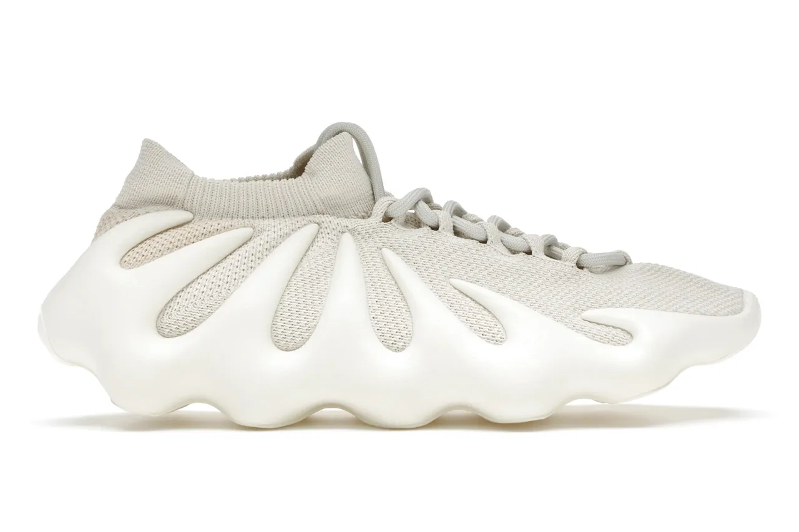
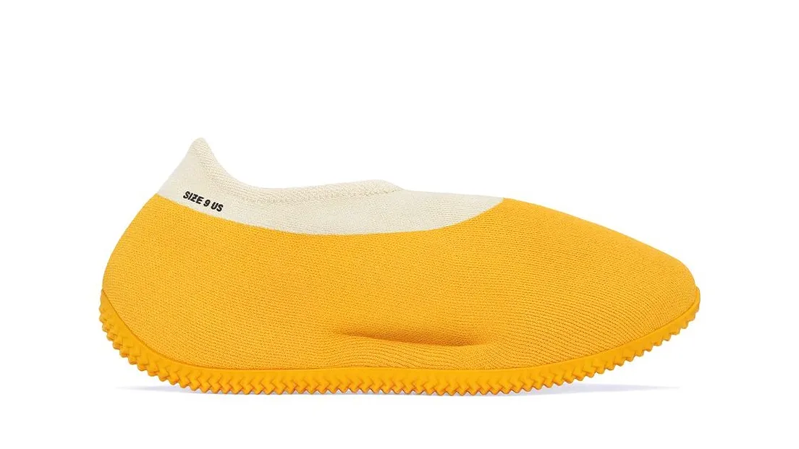
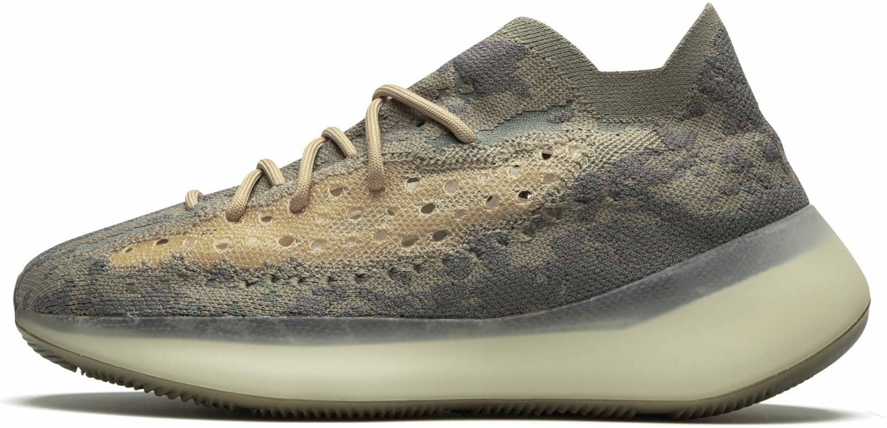

See you should have seen this coming when I was questioning gucci. Yeezy over here just doesn't care and as much as i love how they don't care for the heath of my eyes. they oboiusly don't care when it come to fashion. They are most known for their shoes and The owner Kayne West. As much as I love his music he needs to stay their because someone at yeezy is on something for charging that much for something like these. Honestly do better. I could give a 4 year old some shoes to paint and i could call that fashion. So disapointing sorry eyes for your suffering.
  For most of you regular fans for Yeezy oboiusly are aware these aren't the shoes Yeezy is most known for and while this is true, this is still the point of this. Even though they have good parts the bad is always pointed out and I'll have to be the person to do so. Want more foolery? Come back to pick up more